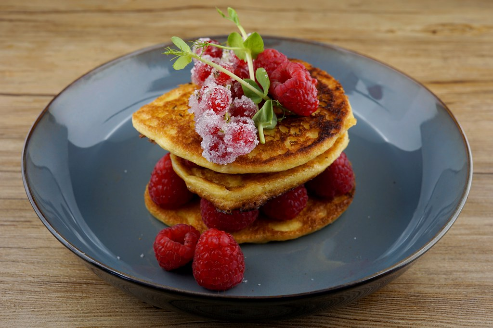

Panecake

Description
This delicious berry sauce for pancakes is made with blueberries and raspberries. Try this thick, rich topping on waffles too.
Ingredients
- 1 ½ cups frozen raspberries
- 1 cup frozen blueberries
- ½ cup white sugar
- ¼ cup water
Steps
- Combine the raspberries, blueberries, sugar, and water in a small saucepan
- bring to a boil and cook at a boil for 5 minutes, scraping the bottom as needed to keep from burning
- Reduce heat to low and simmer until thick, about 10 minutes
- Serve warm
Home